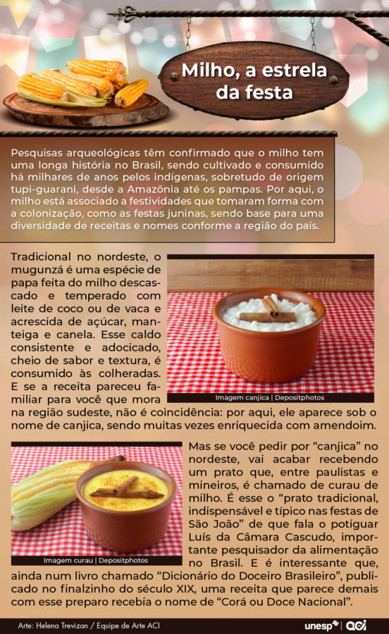

Olhar Histórico Revela Origens dos Elementos Tradicionais das Festas Juninas
Estudos destacam raízes pré-cristãs das celebrações no mês de junho
Neste contexto de debates acalorados e declarações intensas, até mesmo a festa de São João, uma das mais queridas expressões folclóricas brasileiras, não escapou de se tornar objeto de disputa. Na semana passada, durante um famoso programa de debates na TV a cabo, a apresentadora Astrid Fontenelle e a advogada e comentarista política Gabriela Prioli se envolveram em uma troca de palavras acirrada devido às suas diferentes opiniões sobre o significado e a natureza do festejo junino. “Vou para o São João para dançar um forró, comer amendoim cozido. Cheguei lá e era uma festa de axé. Não dá! Eu acho que não dá pelo Brasil, não pelo meu gosto. É uma festa de São João”, disse Astrid. “Não dá para você. Parte de um juízo subjetivo seu”, retorquiu a advogada. “O que você estava esperando era chegar lá e encontrar outra coisa. Acho que vale a pena pensar primeiro: o que é o São João tradicional? Qual o marco temporal que a gente vai estabelecer para dizer o que é São João?”, questionou Gabriela.
A pesquisa desenvolvida pelos pesquisadores da Unesp, como a historiadora Ana Carolina Viotti, vem se dedicando a investigar a origem e a trajetória de diversos alimentos típicos que são apreciados pelos brasileiros durante as festas de São João, que ocorrem nos meses de junho e julho. O projeto Comer História, liderado por Ana Carolina Viotti em colaboração com outros dois historiadores, tem o objetivo de explorar aspectos históricos relacionados a pratos tradicionais, ingredientes e alimentação em geral. Embora não seja possível determinar um "marco temporal" exato para essas tradições culinárias, a pesquisa busca entender como esses alimentos típicos foram introduzidos e incorporados na cultura brasileira ao longo do tempo.
Vinda de Portugal, mas Pré-Cristã
As festas juninas possuem uma história rica e complexa, que remonta a tempos anteriores ao surgimento do cristianismo. Antes da cristianização, os povos da Europa pré-cristã realizavam celebrações coletivas relacionadas aos ciclos da natureza e ao calendário agrícola. Especialmente no Hemisfério Norte, o mês de junho marcava o início do verão e o período de colheita, tornando-o significativo para as comunidades agrícolas. Essas festividades tradicionais eram fundamentais para os povos antigos, pois celebravam a fecundidade da terra e a prosperidade das colheitas, buscando as bênçãos dos deuses para garantir uma safra abundante. Com o avanço do cristianismo na Antiguidade Tardia e na Idade Média, os missionários cristãos se depararam com essas celebrações e perceberam a importância delas na vida das comunidades.
“Naquele momento, o cristianismo que se expandia pela Europa, embora combatesse as crenças ditas pagãs, não tinha como impedir essas festas de grande tradição e que traziam um forte apelo ao convívio social”, diz Alberto Ikeda, professor aposentado do Instituto de Artes da Unesp, câmpus de São Paulo, especialista em estudos de cultura brasileira. “Com o tempo, essas festas foram assimiladas pela tradição cristã e reestruturadas”, diz.
Exatamente, muitos dos pratos típicos das festas juninas no Brasil são servidos em grandes panelas, o que reflete uma tradição culinária comunitária e colaborativa. Essa forma de preparo e compartilhamento dos alimentos está intrinsecamente ligada ao sentido de união e celebração coletiva das festas juninas. Para cristianizar as festividades pagãs relacionadas aos ciclos agrícolas no mês de junho, a Igreja Católica vinculou essas celebrações à memória de santos católicos. Em Portugal, as festas desse período são chamadas de joaninas, referindo-se a São João, cujo dia é comemorado em 24 de junho, tanto em Portugal quanto no Brasil. As festas joaninas são parte de um conjunto de celebrações que incluem também as festas de Santo Antônio, celebrada em 13 de junho, e São Pedro, em 29 de junho.
“Em Portugal, nesse período do ano ocorrem as chamadas Festas dos Santos Populares que têm grande semelhança com as festas juninas do Brasil. Elas além de mobilizarem muitas pessoas também trazem fortes elementos alimentares, como consumo de sardinha, uma prática ligada a Santo Antônio”, explica
De fato, conforme os portugueses chegaram ao Brasil e deram início ao processo de colonização, as tradições das festas joaninas foram se adaptando e ganhando novos contornos. A influência do ambiente e da cultura local trouxe mudanças significativas nas celebrações. Um dos principais fatores que influenciaram essas mudanças foi a diferença entre os hemisférios Norte e Sul. No Hemisfério Norte, onde Portugal está localizado, o mês de junho marca o início do verão e o período de colheita, o que está relacionado às festas de São João e outras festividades joaninas. No entanto, no Hemisfério Sul, onde o Brasil está situado, junho corresponde ao início do inverno, e as tradições agrícolas são diferentes. Essa diferença climática e nos ciclos agrícolas levou a uma adaptação das festas juninas no Brasil. Além disso, a rica diversidade de gêneros alimentares já existentes no território brasileiro, provenientes da alimentação dos povos indígenas, também desempenhou um papel importante na formação das comidas típicas das festas juninas no país.
“Em relação à comida, nota-se uma grande proliferação de pratos e tradições alimentares vinculados à época do ano, com destaque para o milho, a mandioca e o amendoim. Esses três ingredientes eram parte do cotidiano dos povos originários brasileiros. Nas festas juninas, eles são a base para a preparação de diversos pratos típicos, que muitas vezes são chamados de formas diferentes, conforme a região do país”, lembra Viotti.
De fato, entre os ingredientes típicos das festas juninas, o milho ganha destaque especial, principalmente na região Sudeste do Brasil. A historiadora Ana Carolina Viotti explica que, embora por muito tempo a historiografia brasileira tenha enfatizado a mandioca como o alimento básico dos povos indígenas brasileiros, estudos recentes têm reconfigurado essa perspectiva. De acordo com esses estudos, que se baseiam em documentações e análises arqueobotânicas, a mandioca era mais amplamente utilizada pelos povos indígenas que habitavam o território dos estados do Norte e do Nordeste do Brasil. Já nas regiões mais ao sul, como os estados de Goiás, Minas Gerais e São Paulo, o alimento mais comum era o milho. O hábito de consumir milho remonta aos povos indígenas, que não apenas cultivavam essa planta, mas também desenvolveram modos de beneficiamento, como a produção de farinha de milho. Essa tradição foi transmitida ao longo do tempo e se tornou uma parte essencial da culinária brasileira, especialmente durante as festas juninas.
“Os indígenas consumiam milho à exaustão nessa região em que existe hoje a cultura ‘caipira’. Posteriormente, os bandeirantes também plantaram milho em seus caminhos, pois essa cultura demandava pouco cuidado e o tempo decorrido entre o plantio e a colheita era curto. Por essas razões, em São Paulo o consumo do milho acontece há muito tempo”, diz.
Realmente, após tanto tempo dedicado a essa cultura, o Brasil se tornou um dos maiores produtores de milho do mundo, sendo o único país a colher três safras por ano. A segunda safra, colhida em junho, é especialmente relevante, e a abundância e versatilidade do milho se manifestam de maneira concreta nas barraquinhas das festas juninas. O cardápio das festas juninas apresenta uma diversidade de pratos preparados com milho, desde opções mais simples, como o milho na espiga grelhado ou cozido e a tradicional pipoca, até pratos mais elaborados, como o curau, a canjica, o cuscuz, a polenta, o creme de milho, o bolo de milho cremoso e a pamonha, servida tanto em versões doces quanto salgadas.
O amendoim, embora menos presente que o milho, também é um ingrediente recorrente nas mesas juninas, especialmente na famosa receita do pé de moleque. Sendo uma leguminosa nativa e disseminada por toda a América, o amendoim foi combinado com o açúcar, produzido a partir da cana-de-açúcar, resultando em uma receita crocante e adocicada, que às vezes também é enriquecida com leite condensado. Ao pesquisarem a origem do nome "pé de moleque", Viotti e seus colegas do projeto encontraram o mesmo termo associado aos calçamentos irregulares típicos do período colonial, os quais ainda podem ser encontrados em cidades como Paraty (RJ) ou Ouro Preto (MG).
“A semelhança visual entre o doce e aquele tipo de pavimento provavelmente foi o motivo para que ele recebesse esse nome, uma vez que os registros de calçamentos chamados de pé de moleque são anteriores às menções ao doce de mesmo nome”, diz.
Boi-Bumbá na Festa Junina
A adaptação de receitas europeias ao repertório de ingredientes disponíveis no Brasil também se estendeu às bebidas. O vinho quente é um exemplo disso, sendo consumido em Portugal temperado com cascas de cítricos e especiarias durante o inverno. No Brasil, essa tradição foi reinterpretada na forma do quentão, uma versão nacional dessa bebida quente. A professora Viotti destaca que o quentão é verdadeiramente brasileiro por ser preparado com cachaça, uma bebida típica do país. Essa adaptação local acrescenta uma característica distinta à bebida, tornando-a uma presença marcante nas festas juninas brasileiras.
As pesquisas realizadas pela equipe do projeto Comer História têm desmontado algumas teorias sobre a origem dos nomes de pratos tradicionais, incluindo o bolo Mané Pelado, presente nas festas juninas. Acredita-se que o nome do bolo deriva de um vendedor chamado Manoel, que comercializava a iguaria produzida por sua esposa, caminhando sem camisa pelas ruas e teria involuntariamente batizado a receita. No entanto, ao aprofundar suas investigações, os historiadores do Comer História encontraram referências a um preparo chamado "manauês", muito semelhante aos bijus, uma broa de origem indígena feita com massa de mandioca, assada e enrolada em folha de bananeira. A influência portuguesa adicionou à receita ovos, leite, açúcar e gordura, transformando o alimento. Esse preparo passou a ser assado em tabuleiros, e o Mané Pelado seria, portanto, uma versão do manauê. O nome foi sendo modificado ao longo do tempo, de "manauê" para "manué" e, em seguida, para "mané". A referência ao termo "pelado" diz respeito à ausência da folha de bananeira, que ocorreu com a popularização da preparação no tabuleiro.
É verdade, a festa junina no Brasil apresenta uma diversidade de elementos e tradições que variam conforme a região do país. Essa variação é natural em um país de dimensões continentais como o Brasil, onde diferentes culturas e influências se misturaram ao longo da história. Um desses elementos tradicionais é a quadrilha, uma dança que se tornou um símbolo das festas juninas em todo o país. A origem da quadrilha remonta às danças das elites europeias do século 19. Inicialmente, a coreografia envolvia dois casais dançando, daí o nome "quadrilha". Com o tempo, a dança se popularizou e foi incorporada às festas juninas no Brasil, adaptando-se e sendo reinventada de acordo com as tradições locais.
“Dança-se quadrilha no Brasil inteiro. As músicas, porém, costumam ser composições locais, em ritmos que lembram a polca ou a marcha junina. Não se dança bumba-meu-boi em São Paulo, por exemplo. Mas, no Maranhão, e em outros locais da região Norte do Brasil as grandes referências do ciclo junino são os bois-bumbás”, diz.